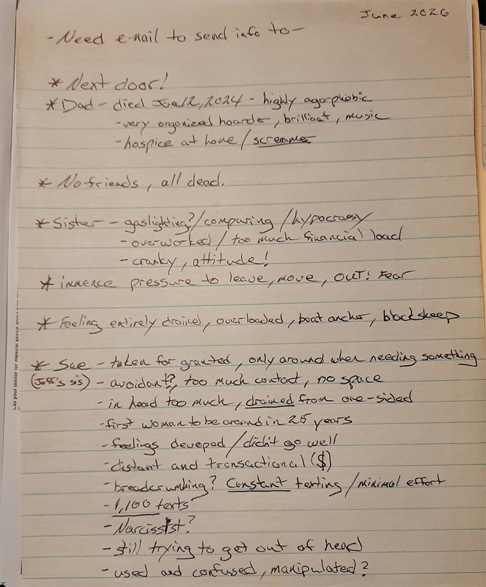
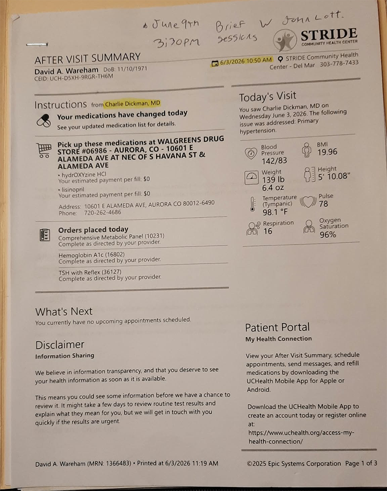
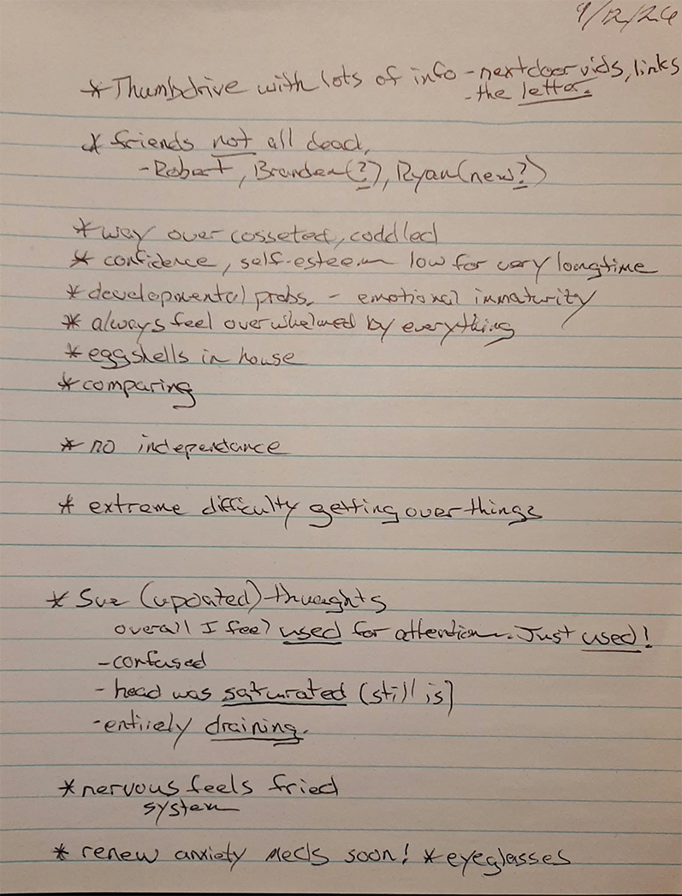
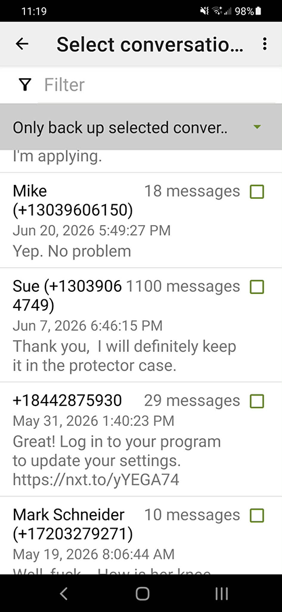
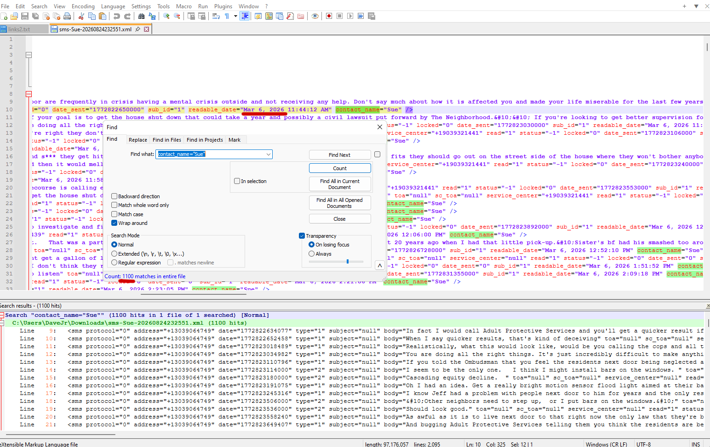
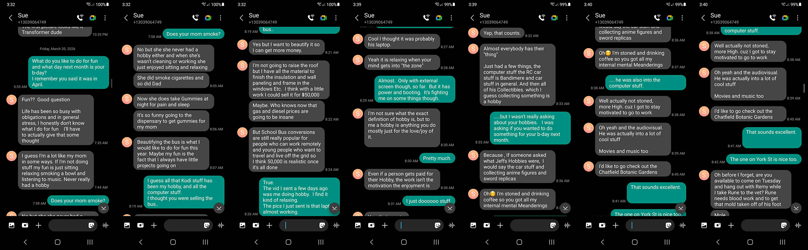
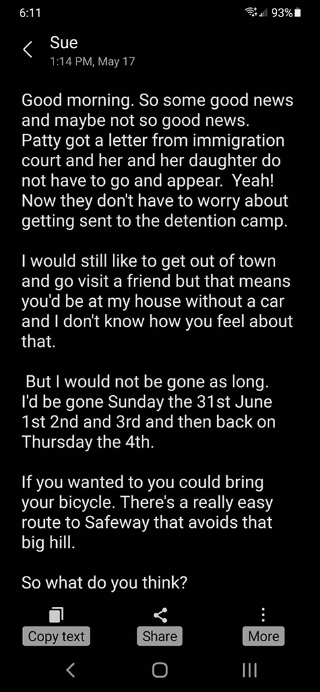
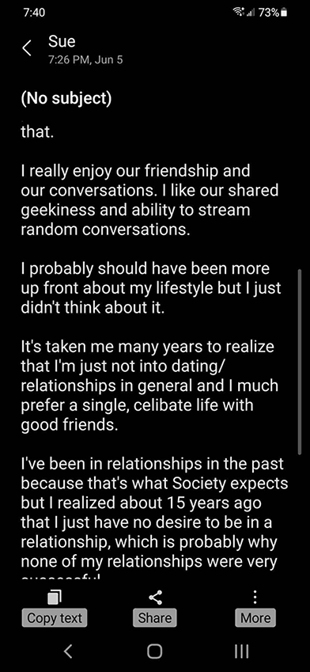

These are updated notes I jotted down a couple weeks ago.

I implore you to review the material linked below, noteably the first one titled 'Screamer'. In 2023 new ownership acquired the 'facility' next door and it's been almost torturous since and needs to addressed with utmost seriousness. Magnolia Place at 394 Nomme St. Aurora, Co.
https://dwthings.github.io/nextdoor/Last October 7th a very dear and close friend of thirty years suddeny passed away from complications brought on by his alcoholism. Immediately thereafter, it's almost like his sister sank her hooks into me. The 1,100 texts from her were from March 6th to late May, but overall texting went all the way back to October so I'm sure the total is much higher. The notes I jotted down should explain the rest and the screengrabs are some noteable messages.





This is the letter that I mentioned in my notes above. I wrote it to Sue shortly before starting the therapy sessions at Stride clinic and it might contain a wealth of helpful information. (appologies for the formatting weirdness)
The Letter in PDFThe importance of going back to work was brought up during the therapy at the clinic. I don't know how to lie about being unemployed since 2003, but this was my attempt. All I want is a part time job, a bank account and a used car.
Resume PDFI'm sure you have this on file, but this was the AMHR care plan from before.
AMHR CarePlan.pdf